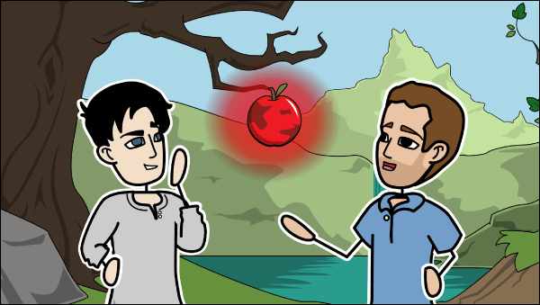

Je me prénomme Adel Zammit,
Si vous lisez cet présentation c'est que j'aurais atteint tant bien que mal l'objectif.
cela m'apportera de l'assurance car j'aurais reussi a créer une page html se qui me paraisser impossible
3 jours avant.
Je vous demande un peu d'indulgence car je suis parmis vous
pour l'apprentissage, le partage de connaissance, la decouverte, l'épanouissement et la satisfaction personnelle.
Je vous laisse vous promener dans une partie de mon imagination que j'ai laisser s'exprimé librement ailleurs que dans ma téte.
Bonne visite

J'étais en colère contre mon ami ;
Je luis dis mon courroux, mon courroux s'éteignit.
J'étais en colère contre mon ennemi :
Je lui tus mon courroux, lors mon courroux grandit.
Et je l'arrosai dans la crainte,
Soir et matin, avec mes larmes ;
Je l'ensoleillai de sourires
Et de souples ruses trompeuses.
Et il crût, il crût nuit et jour,
Porteur d'une pomme éclatante ;
Et mon ennemi la vit luire
Et il savait qu'elle était mienne ;
Dans mon jardin il se glissa
Quand la nuit eut voilé le pôle :
Au matin je vis avec joie
Mon ennemi gisant sous l'arbre.